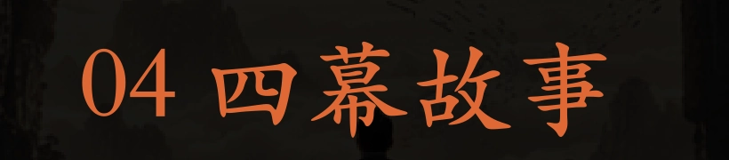
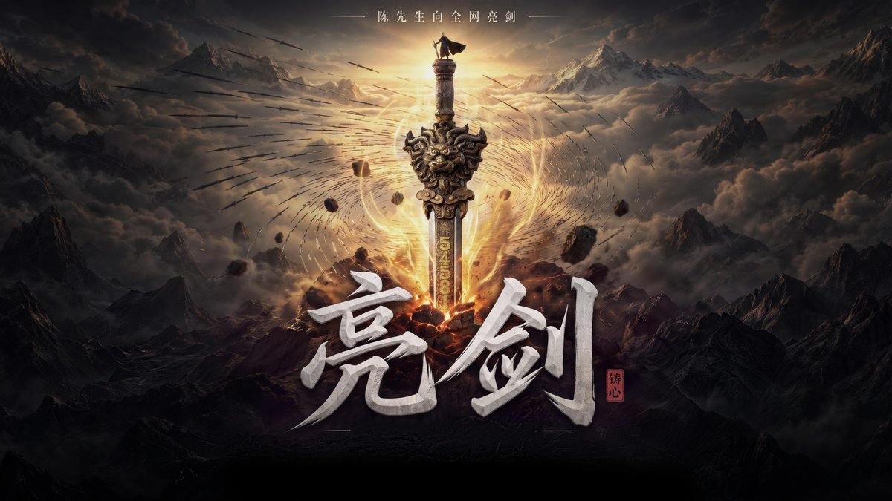
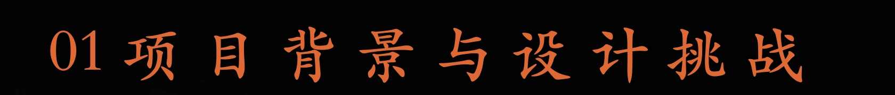
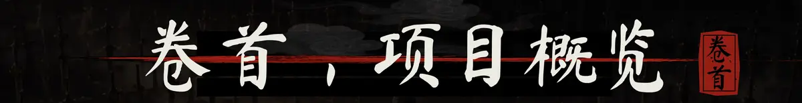
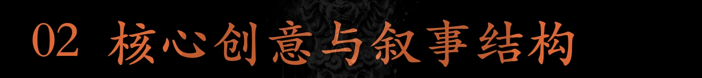
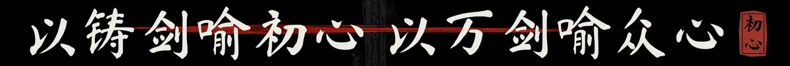
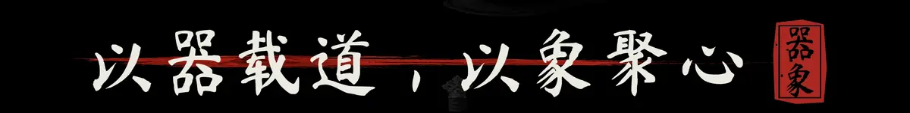
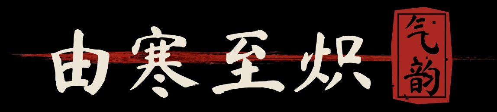
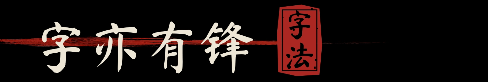

A FOUR-ACT STORY
从孤寒压迫到金色破晓，让色彩、尺度与动作共同推动叙事。


CONTENTS & OVERVIEW

把抽象的品牌信念，
锻造成可被看见的力量。
为陈先生打造一支具有回归与宣战仪式感的武侠概念预热片：将行业处境转译为风沙与冰川，将初心转译为铸剑，将用户信任转译为万剑响应。

THE SWORD AS A METAPHOR FOR THE HEART

从狂沙、冰川到断剑残坊，用自然环境的压迫感替代对行业乱象的直接说教。
VISUAL MOTIFS & TYPOGRAPHY

剑同人设，铸剑即修炼。
灵岩嵌辛选图腾，孕育第一缕光，初心未凿。
02 / CHARACTER STUDY
斗笠与黑袍，贯穿始终的视觉锚点。
斗笠与黑袍，在冷调环境中建立苦行者形象。
色彩系统

色彩即叙事。由冷暖对撞走向金色破晓，明度由压抑走向爆发。
04 / TYPOGRAPHY

书法立势，宋体叙事，数字铸刻为信念。

A FOUR-ACT STORY
从孤寒压迫到金色破晓，让色彩、尺度与动作共同推动叙事。
05 / PROJECT RESPONSE
当场 GMV
直播间累计观看
TVC 点赞
TVC 播放量
涨粉
数据来源：项目作品集资料 · 2026.04.25 项目记录